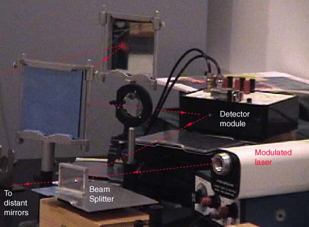
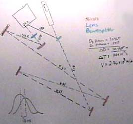
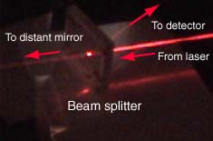
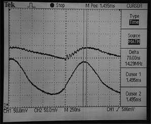
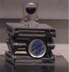

Example Setup, Speed of Light
A laboratory speed of light experiment is conducted by directing ight from a modulated He-Ne laser is detected at the beginning and end of a measured path. The AC signals from photodetectors at these two points are compared on an oscilloscope to measure the phase difference and from that the velocity of the light.

|  | A beam splitter is used to divide the beam for detection at begining and end of the measured path. Plane, front-surfaced mirrors are used to deflect the beam to get as long a path as possible.

|

Experimenters: Chris Cleven, Chris Farrington, Ryan Webb | 
After reflection from the distant mirrors, the modulated beam is detected and compared on an oscilloscope to the beam which is reflected from the beam splitter. The speed of light can be computed from the measured time difference.
|
The time interval measured on the oscilloscope display above is 70 nanoseconds. For the longer path illustrated in the sketch above, the measured time interval was 110 ns and corresponded to a light speed of 2.76 x 10^8 m/s.
|
Index |